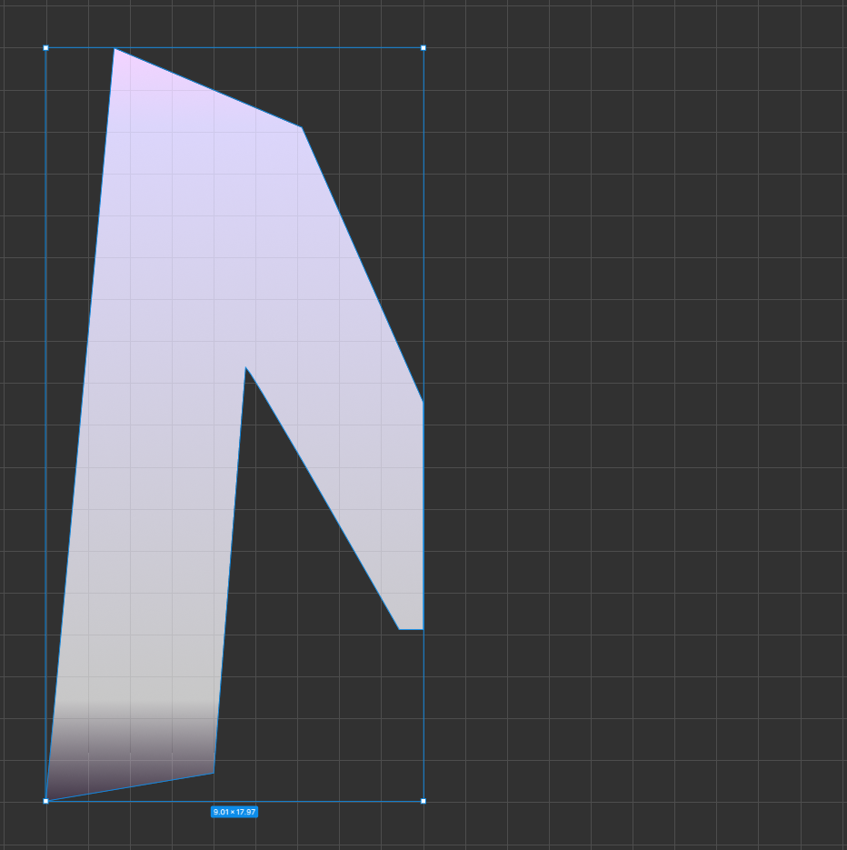
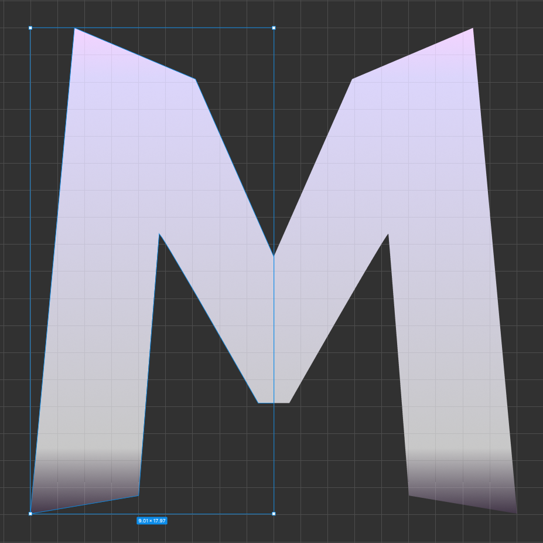
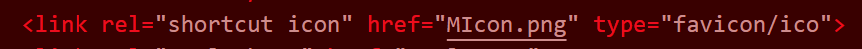

How I made my favicon
First, I opened up Figma, which I've been familiar with for a couple of years now.
Once in the design interface, I used the pen tool to create one half of the M.

Then I duplicated and mirrored the half. This is what I exported.

Lastly, I uploaded the file to my VSCode project and added this line between the /head tags.

Go back